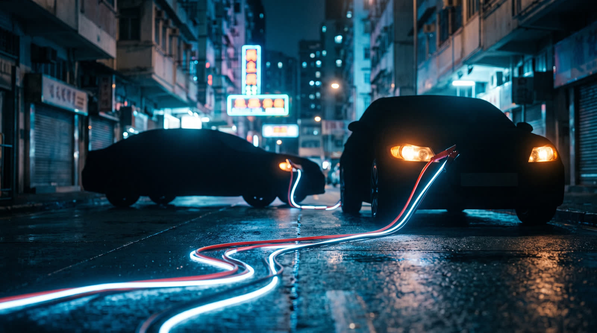

救車線接法：6 個步驟，正極先行
完整教學：接線次序、拆線次序、過江龍用法、救車寶用法、24V 電池接法，同三個最容易出事嘅錯誤。
救車線接法：紅夾正極（死火車 → 救援車）→ 黑夾負極（救援車 → 死火車車身金屬位）→ 救援車充電 5 至 10 分鐘 → 撻死火車 → 先拆黑、後拆紅。唔想自己搞？搭電 $2XX 起，15 至 20 分鐘到場。
唔肯定自己接得對？打嚟問一句，24 小時有人聽。
準備
接線前五分鐘要做邊四件事？
- 確認電池位置 —— 大部分車喺車頭；部分 Van、HIACE 喺司機位底；部分車款喺乘客位底。
- 熄晒所有電器 —— 兩部車都熄匙，關冷氣、音響、大燈、室內燈。
- 檢查線材 —— 線徑夠粗（私家車約 6 至 8 AWG）、長度 2 至 3 米、夾口冇生鏽。
- 睇環境 —— 有冇漏油、油氣、明火；兩部車距離要夠線長，唔好拉得太緊。
路邊接線先顧安全：開危險警告燈、擺反光三角牌，人唔好企喺車流一側。高速公路或隧道範圍內唔建議自己接，叫救車更安全。
主教學
救車線接法有邊六步？
- 1
兩車熄匙，確認正負極
熄匙、關所有電器，打開電池蓋，睇清楚樁頭標示：正極「＋」多數紅色，負極「－」多數黑色。污糟就用布抹乾淨，睇得清先接。
- 2
紅色夾接死火車正極
紅夾先夾死火車電池「＋」樁頭，夾實、唔好掂到車身金屬。呢一步一定要做先。
- 3
紅色夾另一端接救援車正極
同一條線另一端紅夾，夾救援車電池「＋」。兩邊正極接好，先算完成第一段。
- 4
黑色夾接救援車負極
黑夾先夾救援車電池「－」樁頭。記住：黑色係「先救援車」，唔係先死火車。
- 5
黑色夾另一端夾死火車車身金屬位
另一端黑夾夾引擎艙內嘅金屬接地位（引擎支架、車身螺絲），唔好直接夾死火車電池負極，咁樣可以避免最後一下產生火花。
- 6
充電、撻車、按次序拆線
啟動救援車維持約 2000 轉 5 至 10 分鐘 → 撻死火車 → 撻著後保持約 3000 轉充 5 至 10 分鐘 → 拆線：死火車黑夾 → 救援車黑夾 → 救援車紅夾 → 死火車紅夾。
名詞
過江龍意思係咩？
「過江龍」原本指一條夠長嘅電纜，香港車主用嚟形容救車線：由一部有電嘅車，將電「過」去死火車。所以過江龍、汽車過江龍、救車線，講嘅都係同一樣嘢；過江龍用法就係上面六步。
另一種叫「過江龍尿袋」或者「救車寶」，係便攜式應急電源，唔需要另一部車。夾法一樣：先紅（正）後黑（負），開機、撻車，撻著後先關機，再按先負後正拆線。
過江龍（救車線）
好處：供電穩定、可以連續試幾次。限制：要有人肯幫手，兩部車要泊得近。
救車寶（應急電源）
好處：唔靠人、細細部可以擺車尾。限制：電量有限，撻幾次就跌，24V 車要對應規格。
24V
24V 電池接法點解唔可以照抄 12V？
貨櫃車、重卡、起重機多數係 24V 系統，通常由兩粒 12V 串聯而成。私家車 12V 救車線直接夾 24V 車，電壓同電流都對唔上，有機會燒保險絲、發電機或者車電腦，亦可能令電池受損。
正確做法：用 24V 對應規格嘅設備，或者由專業技師處理。我哋 24V 貨車搭電 $5XX 起，15 至 20 分鐘到場；如果只係想知自己部車係 12V 定 24V，睇電池標籤或車主手冊最快。
唔好夾錯：「兩粒 12V 串聯」唔等於可以逐粒夾。夾錯位置一樣會短路，而且 24V 車嘅接地點同私家車唔同。
速查
汽車搭電順序係點？
| 步驟 | 動作 | 記法 |
|---|---|---|
| 1 | 紅夾 → 死火車正極「＋」 | 正極先行 |
| 2 | 紅夾 → 救援車正極「＋」 | 兩邊正極接好 |
| 3 | 黑夾 → 救援車負極「－」 | 黑色先救援車 |
| 4 | 黑夾 → 死火車車身金屬位 | 接地，唔夾電池負極 |
| 5 | 救援車 2000 轉充 5 至 10 分鐘 | 先充後撻 |
| 6 | 撻死火車，著後 3000 轉充 5 至 10 分鐘 | 唔好即刻熄 |
| 7 | 拆線：先黑後紅 | 拆線次序同接線相反 |
危險
邊三個錯誤最容易出事？
正負極接反
紅夾夾負極、黑夾夾正極，通電即刻短路。輕則燒保險絲，重則燒車電腦，電池亦可能受損。接之前睇清楚「＋」「－」。
最後一下夾出火花
直接夾死火車負極會產生火花，附近有油氣就好危險。正確做法係夾車身金屬接地，遠離電池。
線太幼、太長
線徑不足會發熱，太長就壓降大，撻幾次都撻唔著。私家車揀 6 至 8 AWG、2 至 3 米；商用車要更粗。
唔確定就停手：接線前後有任何疑問，打 5368 3668。技師 15 至 20 分鐘到場，12V $2XX 起、24V $5XX 起、電單車 $180 起，比自己燒電腦便宜得多。
地區
停車場同高速出口有冇得上門？
唔想自己接線，過江龍 24 小時上門：香港島、九龍、新界全覆蓋，包括屋邨、商場停車場、工業區、隧道口附近同高速出口。元朗、屯門、荃灣、土瓜灣等查詢最多嘅地區，平均 15 至 20 分鐘到場。

常見問題
救車線同過江龍，車主最常問咩？
救車線點接？次序係點？
紅夾接死火車正極，另一端接救援車正極；黑夾接救援車負極，另一端夾死火車車身金屬接地位。救援車約 2000 轉充 5 至 10 分鐘後撻車。拆線相反：先拆黑、後拆紅。
過江龍意思係咩？
「過江龍」原本指一條長電纜，香港車主用嚟形容救車線：由有電嘅車過電去死火車。過江龍搭電、汽車過江龍、過江龍用法都講同一件事。
過江龍用法有咩要注意？
線徑夠粗、正負極唔好相碰、遠離明火同油氣。接線先正後負，拆線先負後正，次序唔可以調轉。
救車寶用法同過江龍有咩分別？
救車寶唔需要救援車：夾好正負極、開機、撻車，撻著後先關機再拆線（先負後正）。一個人搞得掂，但電量有限，24V 商用車要對應規格。
24V 電池接法同 12V 一樣嗎？
唔一樣。24V 商用車多數由兩粒 12V 串聯，私家車 12V 線照夾有電壓同電流風險，可能燒保險絲或電腦。24V 貨車要用專用設備，我哋 24V 貨車搭電 $5XX 起。
汽車搭電順序錯咗會點？
正負接反或最後夾負極時出火花，可能燒電腦、保險絲，甚至令電池受損。唔肯定唔好試，打 5368 3668 由技師處理，搭電 $2XX 起。
撻著之後要行幾耐先熄車？
至少行 20 至 30 分鐘，或者保持約 2000 轉原地充 10 至 15 分鐘。撻著後行一陣又死火，多數唔係電池問題，要驗發電機。
冇救援車，可以點做？
用救車寶自己接，或者叫搭電服務。過江龍 24 小時，15 至 20 分鐘到場，12V $2XX 起、24V $5XX 起、電單車 $180 起。
救車線要幾粗？
私家車一般 6 至 8 AWG 夠用；24V 商用車要更粗。線太幼會發熱、壓降大，撻唔著仲有機會燒線。長度 2 至 3 米最實用。